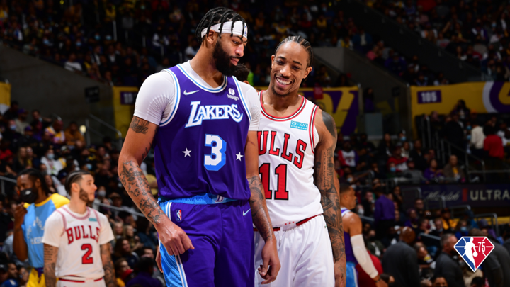
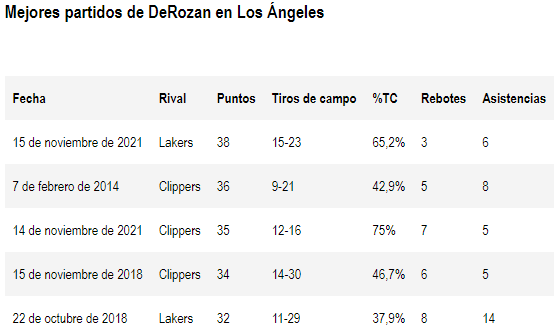
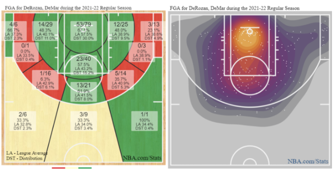

El gran momento de DeMar DeRozan en su paso por Los Angeles: datos, estadísticas y registros
El escolta de Chicago Bulls está viviendo un momento de auténtico esplendor en la gira del equipo por California, venciendo a los Lakers y Clippers con actuaciones insuperables y llevando a los de Billy Donovan a lo alto del Este. Lo analizamos.
Todo proyecto que se precie necesita tener el equilibrio justo entre jóvenes en disposición de dar un salto hacia adelante y veteranos en busca de redención. Los Chicago Bulls de la temporada 2021-2022 tienen la mezcla perfecta de estos dos elementos para conseguir por fin tener una Fase Regular en positivo que los devuelva a su hábitat natural como son los Playoffs. Los de Billy Donovan protagonizaron una intensa offseason haciéndose con piezas de relevancia para mejorar definitivamente un plantel que necesitaba consistencia. Pocos exteriores han demostrado saber reinventarse y evolucionar más en lo individual a lo largo de los últimos años que DeMar DeRozan, alguien capaz de pasar de ser un anotador puro a un creador de juego maduro y calmado sin perder un ápice su especial relación con el aro.
La llegada del escolta californiano a las orillas del lago Michigan despertó tantas alegrías entre los aficionados como dudas. ¿Otro escolta junto a Zach LaVine? ¿Conseguirían congeniar? ¿Cómo quedaría el ataque con Lonzo Ball al lado? Todas esas preguntas, aunque legítimas, quedaron relegadas a un segundo plano en el mismo momento que todo el plantel saltó a cancha, demostrando en los primeros encuentros de temporada que la unión de los tres exteriores no podía haber sido más acertada y que los Bulls estaban en disposición de hacer algo importante.
Como una segunda oportunidad, en Chicago DeRozan está encontrando el reconocimiento que le faltó en San Antonio. Un periodo de crecimiento, de maduración y de enriquecimiento en su juego, llevándolo hacia áreas que en los Raptors apenas había delineado, consiguiendo al mismo tiempo ser una pieza clave en el desarrollo de los jóvenes como mentor de muchos de ellos.
14 partidos después de comenzar la actual temporada, el escolta nacido en Compton ha logrado colarse como el tercer máximo anotador de toda la competición con una media de 26,9 puntos por noche con una efectividad del 51% en tiros de campo, además de un eficiente 37,1% al triple y 4,1 asistencias. El rendimiento de DeRozan en ataque está igualando prácticamente su mejor curso en lo individual, alcanzado en la 2016-2017 con los Raptors, donde se fue a 27,3 tantos por encuentro y llevó a los canadienses a concluir terceros del Este, siendo incluido en el tercer mejor quinteto de la campaña.
Un buen ejemplo del gran momento de forma que atraviesa el escolta ha sido más que evidente en su paso por su natal Los Ángeles. En los dos encuentros que ha tenido en el Staples Center ante los Clippers y Lakers, DeRozan ha realizado actuaciones magistrales, a la altura de muy pocos en toda la historia y mucho menos del modo que lo ha hecho en el contexto actual de la liga. Tan solo 51 jugadores en toda la historia de la NBA han logrado tener al menos dos partidos seguidos con más de 35 puntos y un 60% de acierto en tiros de campo añadiendo 5 asistencias como mínimo, y la figura de los Bulls se ha unido en esta última jornada a esta lista. De todos estos, tan solo Oscar Robertson ha logrado hacerlo en tres ocasiones, algo que podría igualar DeRozan el 17 de noviembre contra los Blazers.
Lo más destacable del tramo que está atravesando el jugador de 32 años es que ha logrado impulsar a los Bulls a lo alto fuera de casa y ante dos rivales de entidad como son los Clippers, que llevaban 7 victorias seguidas hasta medirse a los Bulls, y Lakers, que cuentan con un plantel amplio y dos figuras notables como Westbrook y Davis. Por otro lado está el añadido de que DeRozan jugaba "en casa" al ser nativo de Los Ángeles, algo que a lo largo de su carrera había sido sinónimo de una motivación extra en él, pero que en este último viaje ha alcanzado un nivel más.
🔥🔥🔥 Coming off 35 points on 12-16 shooting last game...@DeMar_DeRozan drops 38 on 15-23 shooting tonight! pic.twitter.com/8LxY6ePZcB
— NBA (@NBA) November 16, 2021
El último encuentro ante los de Frank Vogel, que terminó con una contundente victoria de Chicago por 121-103, fue posible gracias a los 38 puntos en 15 de 23 tiros de campo (65,2%), añadiendo 3 rebotes y 6 asistencias. Lo destacable es hacerlo en la segunda noche de un back-to-back tras haber logrado 35 tantos con un 75% de efectividad. En resumidas cuentas, DeRozan ha anotado 71 puntos en 44 tiros reales, lo que supone un 81% en true shooting, según Positive Residual, añadiendo además 11 asistencias por un total de 5 pérdidas, datos de absoluta élite en cuanto a eficiencia.
Lo que merece la pena destacar de su gran estado de forma no son solo los números, sino el cómo los está logrando. En un momento en el que las zonas de juego están cada vez más polarizadas, el escolta se ha establecido como un absoluto especialista de la media distancia. La cabeza de la bombilla y los alrededores del tiro libre son su hábitat natural y el espacio en el que mejor se mueve, castigando tanto los cambios con interiores como las defensas agresivas.
En lo que llevamos de temporada, DeRozan se ha asentado como el segundo jugador más prolífico desde la media distancia, solo superado por Kevin Durant, siendo el que más ha lanzado y el cuarto con mejor porcentaje entre aquellos con un mínimo de 60 intentos. Así, el escolta ha conectado el 42% de sus intentos desde la llamada zona muerta, a lo que añadir una gran precisión en la zona restringida con un 70,2% de efectividad y un 57,6% en la pintura.
DeMar DeRozan está dulce y atraviesa un tramo inmejorable de carrera, estando en plenitud mental, física y técnica y con la meta de llevar a Chicago Bulls a su objetivo final. El calendario acabará poniendo a los de Illinois en su lugar, pero este inicio de curso del escolta californiano merece su reconocimiento, especialmente para alguien que ha pasado tres campañas lejos de los focos y rindiendo a un excelente nivel.